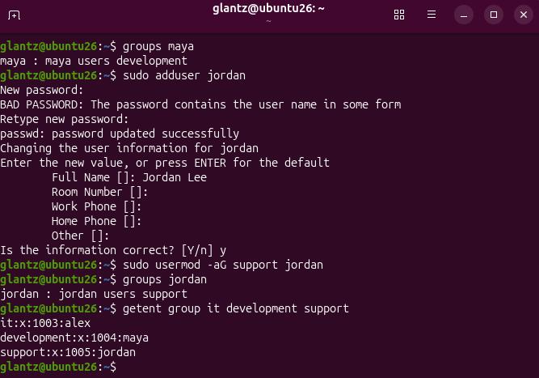
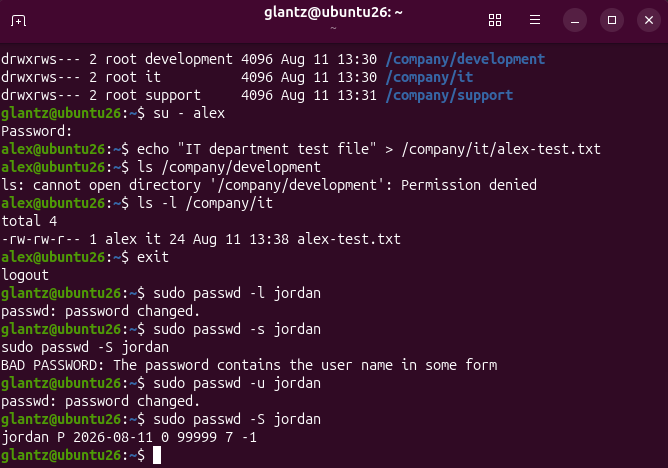
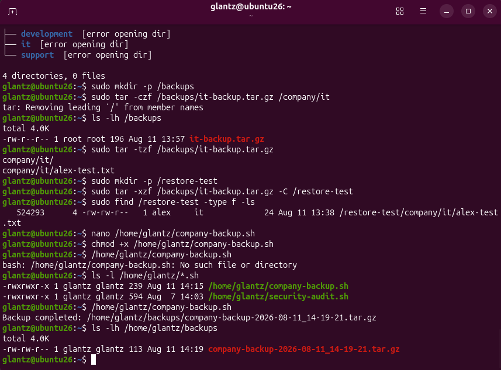
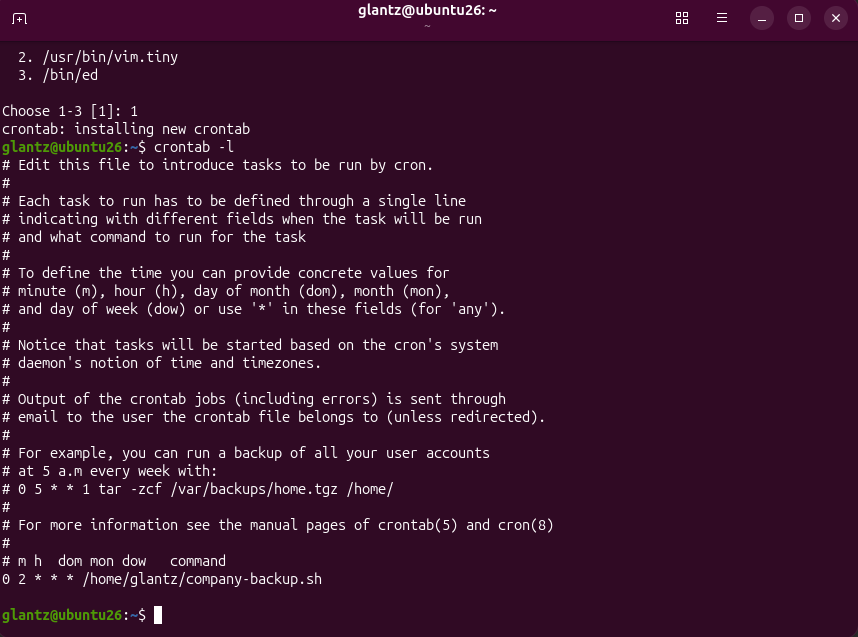
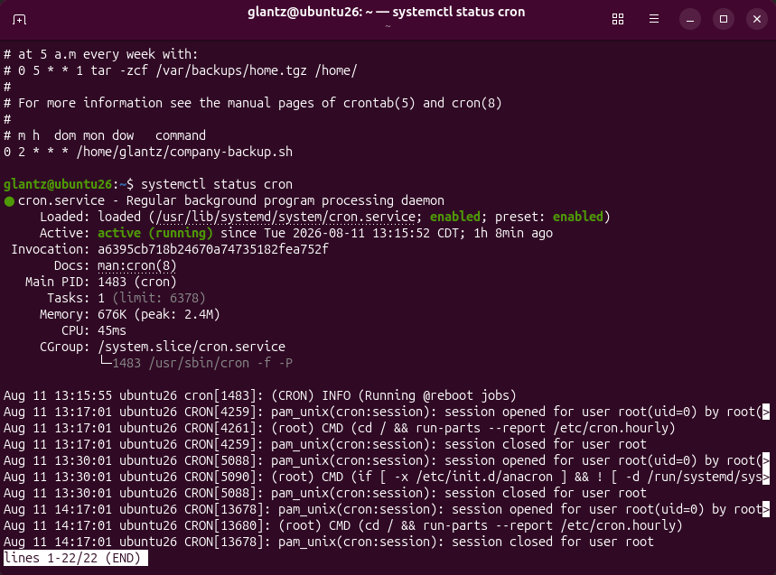
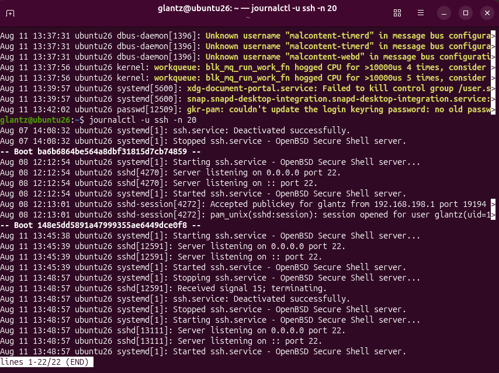
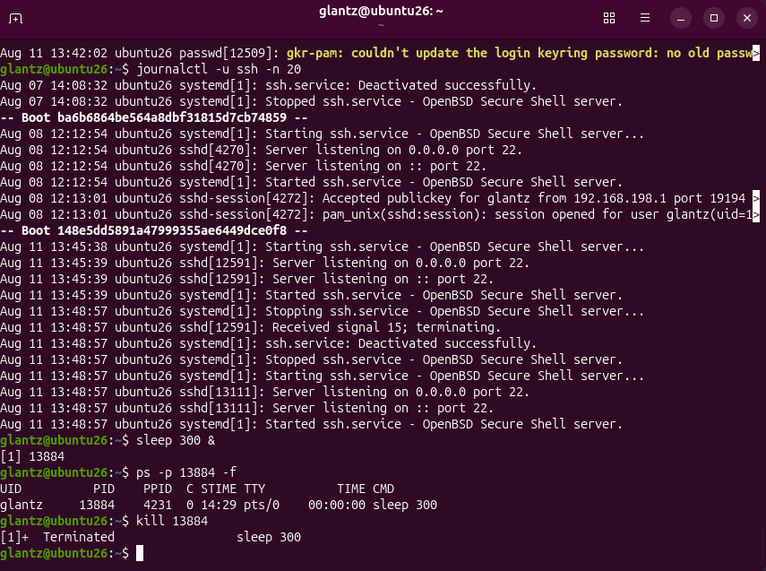
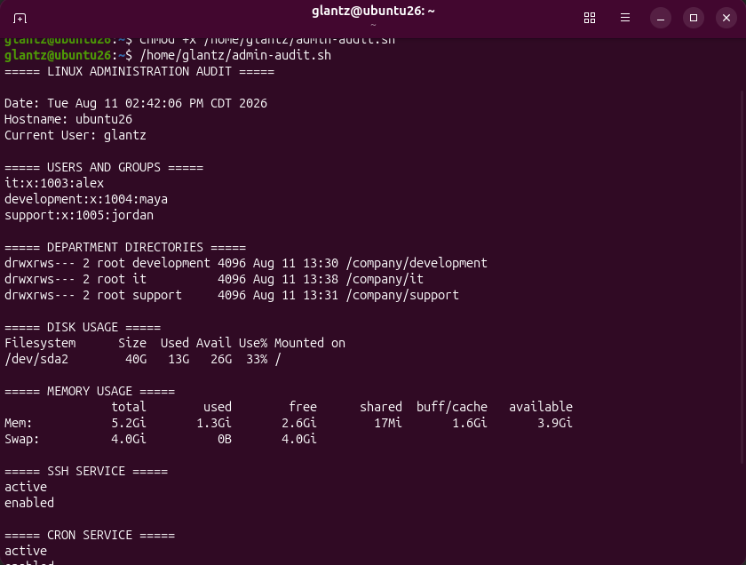
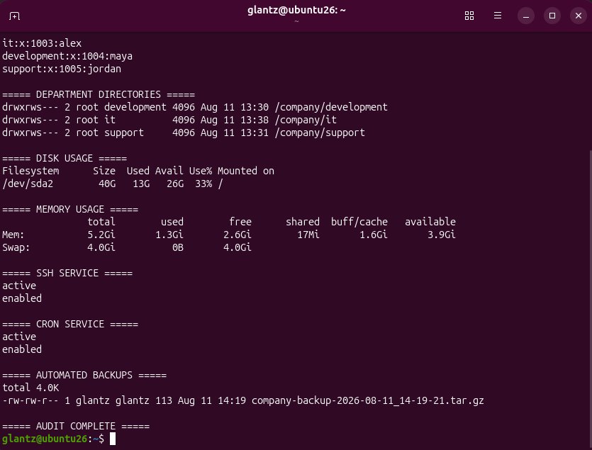
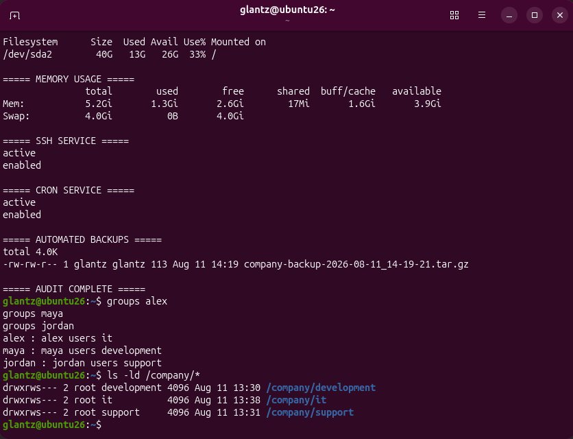

Linux Administration Project
Linux Administration Lab
Built a simulated company environment in Ubuntu to practice Linux system administration, user and group management, permissions, service management, monitoring, backups, automation, troubleshooting, and Bash scripting.
Overview
Project Goals
The goal of this project was to practice common Linux administration responsibilities in a small simulated company environment.
I created separate IT, Development, and Support departments, configured users and groups, restricted access to department directories, administered Linux services, monitored system resources, managed software packages, created and restored backups, and automated administrative tasks with Bash and cron.
I also practiced troubleshooting with system logs and created a final administration audit script to verify several parts of the environment from one command.
Identity Management
Users and Department Groups
I created three test users to represent employees working in different departments:
alex— ITmaya— Developmentjordan— Support
Each employee was assigned to a Linux group corresponding to their department. This allowed access to resources to be managed through group membership instead of configuring permissions separately for every individual user.

Access Control
Department Directories and Permissions
I created separate directories under /company for
the IT, Development, and Support departments. Each directory was
assigned to its corresponding Linux group.
The directories were configured with
2770 permissions. This gives the directory owner
and department group full access while preventing users outside
the group from accessing the directory.
The leading 2 enables the setgid permission. This
causes files created inside a department directory to inherit
that directory's group ownership.

I tested the configuration using the IT employee account.
alex was able to create a file inside the IT
directory but received a Permission denied response
when attempting to access the Development directory.
The file created by Alex automatically inherited the
it group, confirming that the setgid configuration
was working correctly.
Account Administration
Managing User Accounts
I practiced temporarily disabling and restoring access to a user account by locking and unlocking Jordan's password.
I used passwd -S to verify the account status. A
locked password was reported with an L, while the
restored password showed P.
This demonstrated how an administrator can disable password access to an account without deleting the account or its files.
Service Management
SSH and systemd
I used systemctl to inspect and manage the OpenSSH
service on the Ubuntu system.
The SSH service was initially inactive and disabled. I started the service and then enabled it so that it would automatically start when Ubuntu boots.
I verified that SSH was both
active and enabled and also practiced
restarting the service. This demonstrated the basic service
management workflow used by systemd-based Linux distributions.
System Monitoring
Monitoring System Resources
I used several Linux utilities to inspect the health and resource usage of the Ubuntu system.
-
df -h— checked filesystem and disk utilization -
free -h— checked physical memory and swap usage -
top— monitored CPU, memory, and running processes -
lsblk— inspected disks, partitions, and mount points
Using multiple monitoring commands gave me different views of system health and helped me understand how administrators can quickly investigate resource usage from the command line.
Software Management
APT Package Management
I practiced maintaining software using Ubuntu's APT package manager.
I refreshed the package information with
apt update and reviewed the available upgrades
before making additional changes.
I then installed the tree utility and verified the
installation by checking its version and using it to inspect the
company directory structure.
Because the department directories were protected by group permissions, the command also demonstrated that my normal account could see the department directories but could not read their protected contents.
Backup & Recovery
Creating and Restoring Backups
I used tar with gzip compression to create a backup
of the IT department directory.
After creating the archive, I inspected its contents to verify that the expected files were actually included in the backup.
I then restored the archive into a separate test directory rather than overwriting the original data. The restored test file retained its ownership information, providing additional verification that the backup and recovery process worked.
Automation
Bash Backup Script
After completing the backup manually, I created a Bash script
called company-backup.sh to automate the process.
The script creates the backup directory when necessary, generates a timestamp using the current date and time, and creates a compressed archive of the company directories.

Timestamped filenames make individual backups easier to identify and prevent each new backup from immediately overwriting the previous archive.
Task Scheduling
Automated Backups with Cron
I scheduled the Bash backup script with cron so the backup process could run automatically without requiring a manual command.
The crontab entry schedules the script to execute every day at 2:00 AM:
0 2 * * * /home/glantz/company-backup.sh

I then verified that the cron service itself was enabled and actively running.

This connected the Bash script and Linux task scheduler into a complete automated backup workflow.
Troubleshooting
System and Service Logs
I used journalctl to inspect recent system warnings
and then narrowed the results to logs generated specifically by
the SSH service.

The SSH journal showed successful public-key authentication, service startup activity, listening ports, and the service restart performed during the administration exercise.
This demonstrated how Linux logs can be filtered by service when investigating activity or troubleshooting a problem.
Process Management
Managing Linux Processes
I created a harmless background sleep process to
practice managing Linux processes without interfering with an
important system service.
I identified the process by its PID, inspected it using
ps, and then terminated it using
kill.

This exercise demonstrated the basic process-management workflow of identifying a running process and safely terminating it by its process ID.
Bash Scripting
Administration Audit Script
As the final technical task, I created an
admin-audit.sh Bash script that collects several
pieces of administrative information into one report.
The audit checks:
- Current date, hostname, and user
- Department groups and memberships
- Department directory permissions
- Disk utilization
- Memory utilization
- SSH service status
- Cron service status
- Available automated backups

The first part of the report verifies the system identity, department groups, directory permissions, disk usage, and memory usage.

The second part verifies that SSH and cron are active and enabled and confirms that the automated backup archive exists.
The script gave me a repeatable way to check several parts of the environment instead of manually running each administrative command every time.
Verification
Final Configuration Check
At the end of the project, I performed a final verification of the employee group memberships and department directory permissions.

The final output confirmed that Development, IT, and Support were
assigned to the correct groups and that each directory retained
drwxrws--- permissions.
This provided a final check that the access-control configuration remained intact after the other administration and automation work performed during the project.
Skills Demonstrated
What I Practiced
- Linux system administration
- User and group management
- Linux file and directory permissions
- Group-based access control
- Setgid permissions
- User account locking and unlocking
- systemd and systemctl service management
- OpenSSH administration
- Disk, memory, and process monitoring
- APT package management
- Backup creation and recovery
- Bash scripting
- Cron task scheduling
- System and service log analysis
- Linux process management
- Administrative verification and auditing
Takeaway
What I Learned
This project gave me hands-on experience with many of the everyday tasks involved in administering a Linux environment. Instead of practicing commands individually, I used them together to build and manage a small company-style environment with users, departments, permissions, services, backups, and automated tasks.
One of the most useful parts of the project was testing each configuration after making it. I verified access restrictions, checked service states, restored backup data, inspected logs, managed processes, and created an audit script to confirm that the final environment was configured as intended.
The project also gave me more experience using Bash and Linux command-line tools to turn repetitive administration tasks into repeatable processes.